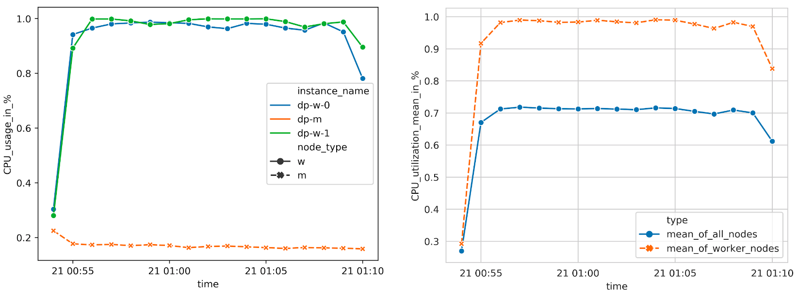
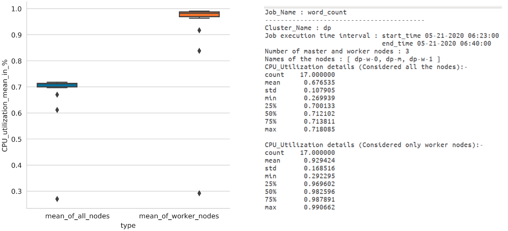

Pulling Google Cloud Monitoring time-series data using python
Mostly we prefer to use cloud platforms for our products/applications, because of security, availability, maintenance, scalability, and cost-effectiveness. Also they provides monitoring tools to know about application performance. These tools help us to understand CPU load, memory, disk, latency, throughput, and many more of a single instance or cluster.
I got the opportunity to pull these metric data (time-series) out and generate reports with graphs and custom statistics for spark clusters (application uses BigTable and Dataproc at GCP ). So that others in a team (performance testing team) can stop doing repetitive work at metric explorer in a GCP to understand instance/cluster load and performance over time for every job/task.
To do POC, Created my own GCP account (trial) and project. Then, by the following instructions given in this repo, I have run the Hadoop job to do word-count in giving data sources with Bigtable(with node 1) and Dataproc(with nodes 2) clusters in GCP.
Using google-cloud-monitoring client, pandas, and matplotlib. I was able to get graphs as below.
 
Sample python script.
import datetime
import json
import pandas as pd
from google.cloud import monitoring_v3
# References
# https://github.com/GoogleCloudPlatform/python-docs-samples/blob/master/monitoring/api/v3/cloud-client/snippets.py
def _get_timestamp(datetime_string):
return int(datetime.datetime.timestamp(datetime.datetime.strptime(datetime_string, "%m-%d-%Y %H:%M:%S")))
def timestamp_datetime(timestamp):
return datetime.datetime.fromtimestamp(timestamp)
def get_timeseries_datapoints(points):
data_points = []
for p in points:
start_time = timestamp_datetime(p.interval.start_time.seconds)
end_time = timestamp_datetime(p.interval.end_time.seconds)
value = p.value.double_value
data_points.append((start_time, end_time, value))
df = pd.DataFrame(data_points, columns=["start_time", "end_time", "value"])
df["start_time"] = pd.to_datetime(df['start_time'])
df["end_time"] = pd.to_datetime(df['end_time'])
return df
def timeseries_df(ts):
metric_labels = dict(ts.metric.labels)
resource_labels = dict(ts.resource.labels)
df = get_timeseries_datapoints(ts.points)
for key in metric_labels:
df[key] = metric_labels[key]
for key in resource_labels:
df[key] = resource_labels[key]
return df
def get_aggregation(aligner, reducer, alignment_period=60):
aggregation = monitoring_v3.types.Aggregation()
aggregation.alignment_period.seconds = alignment_period
aggregation.per_series_aligner = aligner
aggregation.cross_series_reducer = reducer
def time_series(project_id, filter, start_time, end_time, aggregation=None):
client = monitoring_v3.MetricServiceClient()
project_name = client.project_path(project_id)
interval = monitoring_v3.types.TimeInterval()
interval.end_time.seconds = _get_timestamp(end_time)
interval.start_time.seconds = _get_timestamp(start_time)
results = client.list_time_series(project_name,
filter,
interval,
monitoring_v3.enums.ListTimeSeriesRequest.TimeSeriesView.HEADERS, aggregation)
count = 1
for result in results:
timeseries_df(result).to_csv("metric_{}.csv".format(str(count)), index=False)
count = count + 1
if __name__ == "__main__":
filter = 'metric.type="compute.googleapis.com/instance/cpu/utilization" resource.type="gce_instance" resource.label.instance_id="{}" resource.label.zone="{}"'.format(
"xxxxx", "us-central1-a")
aggregation = get_aggregation(monitoring_v3.enums.Aggregation.Aligner.ALIGN_MEAN, monitoring_v3.enums.Aggregation.Reducer.REDUCE_SUM)
time_series(project_id='xxxxx', filter=filter, start_time="05-21-2020 06:23:00", end_time="05-21-2020 08:11:08", aggregation=aggregation)